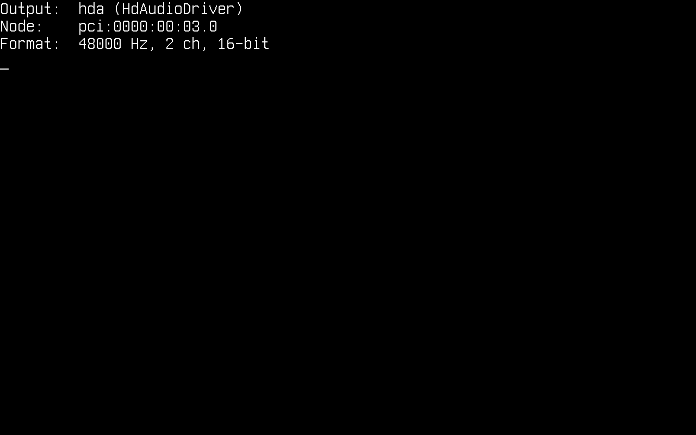

Audio
Dans cet article, nous verrons l'audio sur Cosmos Gen3 : comment trouver la carte son, jouer une tonalité, lire un fichier WAV et générer vos propres sons. Le son sort par un contrôleur Intel High Definition Audio, le standard audio des chipsets PC depuis 2004 et la carte son que QEMU émule sous le nom intel-hda.
Les principales différences si vous venez de Gen2 :
| Gen2 | Gen3 | |
|---|---|---|
| API audio | Cosmos.System.Audio |
Cosmos.Kernel.System.Audio |
| Pilotes de carte son | AC97 | Intel HD Audio via le kit de pilotes (x64 et ARM64) |
| Configuration | Un AudioManager avec un Stream et un Output, puis Enable() |
Aucune : le kit de pilotes publie la sortie au démarrage, et AudioManager.Play(stream) joue à travers elle |
| Mixage | AudioMixer sur plusieurs flux |
Un seul flux par sortie à la fois |
Console.Beep |
Haut-parleur PC | Une onde carrée jouée par la carte son |
| Fichiers WAV | MemoryAudioStream.FromWave |
MemoryAudioStream.FromWave, plus WaveAudioStream, qui lit un fichier en flux depuis un volume |
| Lecture | En arrière-plan une fois Enable() exécuté |
Sur le thread appelant avec AudioManager.Play, ou sur un thread dédié avec AudioManager.TryStartPlayback |
Si vous trouvez des bugs ou quelque chose d'anormal, merci de soumettre une issue sur notre dépôt.
Activer l'audio dans votre noyau
La prise en charge de l'audio dépend d'un commutateur de fonctionnalité. Assurez-vous que le .csproj de votre noyau ne la désactive pas (sa valeur par défaut est true) :
<PropertyGroup>
<CosmosEnableAudio>true</CosmosEnableAudio>
</PropertyGroup>
La carte son est une fonction PCI : désactiver CosmosEnablePCI, ou CosmosEnableInterrupts, qui désactive PCI avec lui, désactive donc aussi l'audio.
Au démarrage, une carte son parvient à AudioManager par le kit de pilotes, comme une carte réseau parvient à NetworkManager. HdAudioDriver, fourni dans Cosmos.Kernel.Drivers, se lie à toute fonction PCI de classe 04.03.00, la classe des contrôleurs HD Audio : ce seul pilote couvre ainsi tout contrôleur conforme à la spécification, plutôt qu'une liste d'identifiants de périphériques. Il trouve un convertisseur et une broche de sortie sur le codec situé derrière le contrôleur, puis publie une sortie nommée hda, que le gestionnaire désigne comme sa sortie principale. QEMU n'attache aucune carte son par défaut : demandez-en une à cosmos run, sur l'une ou l'autre architecture :
$ cosmos run --audio intel-hda # the ICH6 HD Audio controller, the one the test suite runs on
$ cosmos run --audio ich9-intel-hda # the ICH9 one
Un contrôleur HD Audio est un bus plutôt qu'une carte son à lui seul : le codec qui transforme les échantillons en son se trouve derrière lui, c'est pourquoi cosmos run attache le codec hda-duplex de QEMU à côté du contrôleur. Le son est joué sur votre hôte par le backend audio par défaut de QEMU (PipeWire, PulseAudio, ALSA, CoreAudio ou DirectSound, selon l'hôte).
Le journal série montre le pilote qui se lie au contrôleur :
[Audio] primary: HdAudioDriver "hda"
[Drivers] pci:0000:00:02.0 HdAudioDriver published device "hda" (consumed)
[Drivers] pci:0000:00:02.0 HdAudioDriver: version 1.0, codec 0 converter 2 pin 3, stream 4 (4 in, 4 out), 48 kHz stereo 16-bit, line 11
Le dernier champ indique si la ligne d'interruption du contrôleur est parvenue jusqu'au pilote. Il vaut line 11 ci-dessus, sur une machine x64 sans carte réseau. Il vaut no line sur ARM64, où le kit ne route aucune ligne PCI legacy, et sur x64 à côté de la carte réseau e1000e par défaut, qui détient la ligne que le contrôleur partage avec elle. Dans les deux cas, la sortie joue de la même façon : le lecteur suit la position du moteur de flux plutôt que d'attendre l'interruption.
Voici les directives using sur lesquelles s'appuient les extraits ci-dessous :
using System.IO;
using Cosmos.Kernel.HAL.Devices.Audio; // AudioFormat, for the sound you generate (COSMOS0003)
using Cosmos.Kernel.System.Audio;
using Cosmos.Kernel.System.FileSystem;
using Cosmos.Kernel.System.Timers;
La sortie audio
AudioManager détient les sorties publiées par le kit de pilotes. Vérifiez qu'il y en a une avant de jouer quoi que ce soit :
if (!AudioManager.IsEnabled)
{
Console.WriteLine("Audio is compiled out (CosmosEnableAudio=false)");
return;
}
AudioDevice? output = AudioManager.Primary;
if (output is null)
{
Console.WriteLine("No audio output: attach one with cosmos run --audio intel-hda");
return;
}
Console.WriteLine("Output: " + output.Name + " (" + output.DriverName + ")");
Console.WriteLine("Node: " + output.NodePath);
Console.WriteLine("Format: " + output.SampleRate + " Hz, " + output.Format.Channels + " ch, "
+ (output.Format.ChannelSize * 8) + "-bit");

Un AudioDevice indique le format pour lequel il est programmé (48 kHz, 16 bits signés, stéréo, tant que rien n'est joué à une autre fréquence), si son moteur de flux est en marche (IsRunning), et le Player qui l'alimente en ce moment, null tant qu'il est inactif. Une fois que le kit retire la sortie, IsWithdrawn passe à true et tout appel sur elle reste sans effet.
Avec plusieurs cartes son, énumérez-les. La liste est tenue dans l'ordre des chemins de nœud, la sortie principale en premier, de sorte que la sortie principale ne dépend pas du pilote qui a sondé le premier :
for (int i = 0; i < AudioManager.Count; i++)
{
if (AudioManager.TryGet(i, out AudioDevice? device))
{
Console.WriteLine($"[{i}] {device.Name} {device.NodePath}");
}
}
AudioManager.Play et AudioManager.TryStartPlayback utilisent toujours la sortie principale. Pour jouer sur une autre sortie, passez-la à un AudioPlayer ou à AudioPlayback.TryStart (tous deux présentés plus bas).
Jouer une tonalité
Le moyen le plus rapide de produire un son ne demande ni fichier ni configuration : Console.Beep, que le noyau redirige par un plug vers la sortie principale.
/* The Windows default: 800 Hz for 200 ms */
Console.Beep();
/* A C major scale, a quarter of a second per note */
int[] notes = { 262, 294, 330, 349, 392, 440, 494, 523 };
foreach (int note in notes)
{
Console.Beep(note, 250);
}
La tonalité est une onde carrée au quart de la pleine échelle, et l'appel rend la main une fois qu'elle a été jouée, comme sous Windows. Il refuse aussi les mêmes arguments que Windows : une fréquence inférieure à 37 Hz ou supérieure à 32767 Hz, ou une durée nulle ou négative, lève ArgumentOutOfRangeException. Quand il n'y a rien sur quoi jouer (aucune sortie publiée, audio exclu de la compilation, ou une autre lecture qui occupe la sortie), il rend la main immédiatement sans rien jouer.
.NET marque Console.Beep(int, int) comme réservé à Windows, si bien que l'appel déclenche l'avertissement de plateforme CA1416. Le noyau l'implémente malgré tout ; supprimez l'avertissement autour de l'appel, ou pour tout le projet :
<PropertyGroup>
<NoWarn>$(NoWarn);CA1416</NoWarn>
</PropertyGroup>
Lire un fichier WAV
MemoryAudioStream.FromWave lit un fichier .wav déjà en mémoire, et AudioManager.Play le joue sur la sortie principale, en rendant la main une fois la dernière trame jouée :
/* chime.wav is a 16-bit stereo PCM file on the FAT partition mounted at /mnt */
MemoryAudioStream chime = MemoryAudioStream.FromWave(File.ReadAllBytes("/mnt/chime.wav"));
if (!AudioManager.Play(chime))
{
Console.WriteLine("No output, or the output refused the file's format");
}
FromWave lève ArgumentException pour un fichier qui n'est pas un RIFF/WAVE PCM non compressé. L'analyseur parcourt la liste des chunks du fichier : un fichier qui porte des chunks LIST ou fact avant ses échantillons se lit donc comme n'importe quel autre. Play renvoie false quand aucune sortie n'est publiée ou quand la sortie refuse le format du flux.
Ce dernier cas compte, car l'analyseur comprend plus de formats que la carte son n'en joue :
| L'analyseur WAV accepte | La sortie HD Audio joue | |
|---|---|---|
| Encodage | PCM et WAVE_FORMAT_EXTENSIBLE |
PCM signé |
| Bits par échantillon | 8, 16, 24, 32 | 16 |
| Canaux | 1 à 255 | 2 |
| Fréquence d'échantillonnage | Toutes | 8 ; 9,6 ; 11,025 ; 12 ; 16 ; 22,05 ; 24 ; 32 ; 44,1 ; 48 ; 88,2 ; 96 ; 144 ; 176,4 et 192 kHz |
Rien n'est converti ni rééchantillonné en chemin : un fichier mono, 8 bits ou 24 bits est refusé plutôt que joué à la mauvaise vitesse ou à la mauvaise hauteur. Convertissez-le sur votre hôte avant de le copier, par exemple avec FFmpeg, qui décode aussi le MP3, l'OGG et le FLAC :
$ ffmpeg -i song.mp3 -ac 2 -ar 48000 -c:a pcm_s16le song.wav
Un son n'est qu'un fichier : le plus simple pour en livrer un est de le placer sur le disque FAT de l'article Système de fichiers, sous un nom compatible avec FAT. Un noyau qui exécute le serveur FTP de l'article Réseau peut aussi en recevoir un de l'hôte pendant qu'il tourne : curl -T song.wav ftp://localhost:2121/.
Lire en arrière-plan
FromWave garde tout le fichier en mémoire et Play bloque l'appelant pendant toute la durée de l'audio, ce qui convient à un court carillon. Pour un morceau, lisez le fichier en flux depuis le volume avec WaveAudioStream, un bloc à la fois dans une quantité fixe de mémoire, et jouez-le sur un thread dédié avec AudioManager.TryStartPlayback, pour que le noyau continue de tourner pendant la lecture :
if (!VfsManager.TryOpenFile("/mnt/song.wav", out IVfsFileHandle? file))
{
Console.WriteLine("File not found");
return;
}
if (!WaveAudioStream.TryOpen(file, out WaveAudioStream? song))
{
Console.WriteLine("Not a PCM .wav file");
file.Dispose();
return;
}
uint seconds = song.Length / song.SampleRate;
Console.WriteLine("Playing " + seconds + " s of audio");
/* The playback thread reads the file as it plays, and disposes of it when it is done */
if (!AudioManager.TryStartPlayback(song, file, out AudioPlayback? playback))
{
Console.WriteLine("No output, the output is busy, or no scheduler to run the playback on");
file.Dispose();
return;
}
Le second argument est la source dans laquelle le flux lit : la lecture la libère une fois son thread terminé, si bien que le handle de fichier part avec la lecture et que l'appelant n'a plus à s'en occuper. Quand TryStartPlayback renvoie false, rien n'a été démarré et c'est toujours à l'appelant de fermer le handle. Passez null pour un flux qui n'a rien à libérer.
WaveAudioStream est un SeekableAudioStream : il indique sa longueur (Length) et sa position (Position) en trames, et Rewind() ou une nouvelle valeur de Position le déplace. L'AudioPlayback indique où en est la lecture, et Stop() l'arrête avant la fin :
while (playback.IsPlaying)
{
Console.WriteLine((song.Position / song.SampleRate) + " s of " + seconds + " s");
if (Console.KeyAvailable && Console.ReadKey(true).Key == ConsoleKey.Escape)
{
/* Returns at once; the state turns Stopped shortly after */
playback.Stop();
}
TimerManager.Wait(500);
}
if (playback.State == AudioPlaybackState.Completed)
{
Console.WriteLine("Played to the end");
}
State |
Signification |
|---|---|
Playing |
Le thread alimente encore la sortie |
Completed |
Le flux a été joué jusqu'au bout |
Stopped |
Stop() l'a arrêté avant la fin ; ce que la sortie contenait encore a été abandonné |
Failed |
La sortie a refusé le format du flux, a été retirée ou a cessé d'accepter des trames, ou la lecture du flux a levé une exception ; une exception levée est écrite dans le journal série sous la forme [Audio] playback failed: ... |
Trois choses à savoir sur la lecture en arrière-plan :
- Elle nécessite l'ordonnanceur. Sans
CosmosEnableScheduler, il n'y a pas de second thread sur lequel jouer etTryStartPlaybackrenvoiefalse.AudioManager.Play(stream)joue alors le même flux sur le thread appelant. - Une lecture par sortie. Une lecture réserve la sortie à partir du moment où
TryStartPlaybackrenvoietrueet jusqu'à sa fin : un secondTryStartPlayback, unPlayou unConsole.Beeplancé entre-temps est donc refusé. Du code qui ne détient pas l'AudioPlaybackarrête ce qui est en cours de lecture avecAudioManager.Primary?.Player?.RequestStop(). - Ne touchez pas au volume pendant la lecture. Le thread de lecture lit le fichier pendant que le reste du noyau tourne, et la couche système de fichiers n'a aucun verrouillage propre. Écrire sur le même volume tant que
IsPlayingn'est pas repassé à false, c'est chercher les ennuis.
Position compte les trames lues dans le flux, qui ont de l'avance sur ce que vous entendez : l'avance correspond aux trames déjà en file dans le tampon de la carte son, soit environ un dixième de seconde à 48 kHz.
Générer du son
Les échantillons que vous calculez vous-même se jouent de la même façon. Le format d'un flux est un AudioFormat : bits par canal, canaux par trame et signe des échantillons, AudioFormat.Stereo16 étant celui que joue la sortie HD Audio. Une trame entrelace un échantillon par canal, gauche puis droite, chaque échantillon étant une valeur signée de 16 bits en little-endian.
AudioFormat et AudioBitDepth appartiennent au point d'extension expérimental du kit de pilotes : les nommer provoque une erreur de build portant le diagnostic COSMOS0003 (Suivi de l'API publique) tant que le projet du noyau ne prend pas acte de l'absence de promesse de compatibilité. Lire un format, comme le fait output.Format.Channels plus haut, ne demande rien :
<PropertyGroup>
<NoWarn>$(NoWarn);COSMOS0003</NoWarn>
</PropertyGroup>
Pour un son court, remplissez un tampon et enveloppez-le dans un MemoryAudioStream :
const uint SampleRate = 48000;
AudioFormat format = AudioFormat.Stereo16;
/* One second of a 440 Hz sine wave, at a quarter of full scale */
int frames = (int)SampleRate;
byte[] data = new byte[frames * format.FrameSize];
for (int i = 0; i < frames; i++)
{
short sample = (short)(Math.Sin(2 * Math.PI * 440 * i / SampleRate) * 8192);
Span<byte> frame = data.AsSpan(i * format.FrameSize, format.FrameSize);
BitConverter.TryWriteBytes(frame, sample); // left
BitConverter.TryWriteBytes(frame[2..], sample); // right
}
AudioManager.Play(new MemoryAudioStream(format, SampleRate, data));
Un son long ou sans fin gagne à être calculé au fur et à mesure de sa lecture, pour ne coûter aucune mémoire : dérivez de AudioStream et remplissez le tampon que le lecteur passe à Read. La classe de base ne porte volontairement aucune longueur, pour qu'un flux puisse jouer indéfiniment, comme le fait un synthétiseur, un mixeur de votre cru ou la bande-son d'un jeu :
/* A sine wave worked out as it is read: it costs no memory and never runs out */
internal sealed class SineStream : AudioStream
{
private const uint Rate = 48000;
private readonly double _step;
private double _phase;
public SineStream(double frequency)
{
_step = 2 * Math.PI * frequency / Rate;
}
public override AudioFormat Format => AudioFormat.Stereo16;
public override uint SampleRate => Rate;
public override bool Depleted => false;
public override int Read(Span<byte> destination)
{
int frameSize = Format.FrameSize;
int frames = destination.Length / frameSize;
for (int i = 0; i < frames; i++)
{
short sample = (short)(Math.Sin(_phase) * 8192);
Span<byte> frame = destination.Slice(i * frameSize, frameSize);
BitConverter.TryWriteBytes(frame, sample);
BitConverter.TryWriteBytes(frame[2..], sample);
_phase += _step;
if (_phase >= 2 * Math.PI)
{
_phase -= 2 * Math.PI;
}
}
return frames * frameSize;
}
}
Read renvoie le nombre d'octets écrits, toujours un nombre entier de trames, et le lecteur cesse de lire dès que Depleted passe à true ou que Read renvoie 0. Un flux qui ne s'épuise jamais doit être arrêté, c'est pourquoi il faut le jouer en arrière-plan :
if (AudioManager.TryStartPlayback(new SineStream(440), null, out AudioPlayback? playback))
{
TimerManager.Wait(2000);
playback.Stop();
}
Écrire des trames vous-même
Le lecteur est une commodité au-dessus d'AudioDevice, qu'un noyau peut aussi piloter directement, par exemple depuis une boucle de jeu qui mixe ses propres effets sonores. Le périphérique reçoit les trames dans un tampon circulaire que son moteur de flux vide au rythme de l'horloge du codec : Write copie tout ce qui tient, renvoie le nombre d'octets pris, 0 quand le tampon est plein, et ne bloque jamais.
AudioDevice? output = AudioManager.Primary;
if (output is null || output.Player is not null || !output.TrySetFormat(AudioFormat.Stereo16, 48000))
{
return;
}
SineStream source = new(440);
byte[] chunk = new byte[4096];
output.Start();
/* 500 chunks of 1024 frames: about ten seconds */
for (int pass = 0; pass < 500; pass++)
{
int length = source.Read(chunk);
int written = 0;
while (written < length)
{
int took = output.Write(chunk.AsSpan(written, length - written));
if (took == 0)
{
/* The buffer is full: the codec is playing what it has */
TimerManager.Wait(5);
continue;
}
written += took;
}
}
output.Stop();
Les règles que le périphérique vous impose :
TrySetFormatne fonctionne que tant que le périphérique est arrêté ; un périphérique en marche garde son format et renvoiefalse.- Alimentez-le sans interruption. Du silence est joué tant que le tampon est vide après
Start(), mais le tampon est circulaire : si le code qui écrit prend longtemps du retard, on entend revenir d'anciennes trames. Stop()abandonne ce que le tampon contient encore. Pour entendre la fin d'un son, écrivez d'abord à sa suite l'équivalent d'un tampon de silence (WritableBytesjuste aprèsTrySetFormatvous en donne la taille), comme le fait le lecteur.- Écrire directement ne réserve rien. Vérifiez que
Playervautnullavant de commencer ; unPlayou unConsole.Beepqui arrive pendant que vous écrivez est refusé, car le périphérique en marche refuse son changement de format.
Limitations actuelles
- Intel HD Audio est le seul pilote de carte son : pas d'AC97, de Sound Blaster, de virtio-sound ni d'audio USB, et pas de haut-parleur PC. Sans contrôleur HD Audio,
Console.Beeprend la main immédiatement sans rien jouer. - Lecture uniquement. Rien n'enregistre : les entrées du codec, y compris l'entrée ligne du
hda-duplexde QEMU, restent inutilisées. - Un seul format : stéréo 16 bits signé, aux fréquences du tableau ci-dessus. Les flux d'une autre disposition ou à une autre fréquence sont refusés plutôt que convertis ou rééchantillonnés.
- Pas de mixeur : une sortie joue un flux à la fois, et une seconde lecture, un
Playou unConsole.Beepest refusé jusqu'à la fin de celle en cours. - Pas de réglage du volume. Le pilote ouvre les amplificateurs du codec au gain maximal ; mettez vos échantillons à l'échelle pour jouer moins fort.
- Le pilote joue par le premier convertisseur et la première broche capable de sortir du son, sur le premier codec qui possède les deux. Sur une machine à plusieurs prises jack, ce n'est peut-être pas celle que vous écoutez, et l'audio HDMI ou DisplayPort d'un ordinateur, quand il passe par un contrôleur HD Audio distinct, est publié comme une sortie à part entière qui peut se retrouver en tête du tri.
- WAV est le seul format de fichier que lit le noyau ; il n'y a pas de décodeur MP3, OGG ou FLAC.
Fonctionnement
Au démarrage, l'initialiseur de la bibliothèque installe le consommateur du kit de pilotes propre au gestionnaire audio avant l'exécution de l'étape des pilotes, si bien que le gestionnaire voit chaque sortie publiée par un pilote. HdAudioDriver se lie à la fonction PCI du contrôleur, la réinitialise, met en place les anneaux de commandes et de réponses par lesquels on communique avec les codecs, et parcourt les widgets de chaque codec à la recherche d'un convertisseur de sortie et d'une broche capable de piloter une sortie. Il relie la broche au convertisseur, ouvre leurs amplificateurs, allume l'amplificateur externe dont beaucoup de portables ont besoin pour leurs haut-parleurs, programme le premier flux de sortie sur un tampon DMA circulaire de 16 Kio découpé en quatre périodes de 4 Kio, et publie la sortie sous le nom hda (n'importe quel pilote peut en publier une : Publier un périphérique).
C'est AudioPlayer qui joue, que la lecture ait été lancée par AudioManager.Play, par un AudioPlayback en arrière-plan ou par le plug de Console.Beep (qui joue une onde carrée générée). Il réserve la sortie, la programme pour le format et la fréquence du flux, démarre le moteur de flux et lit le flux 1024 trames à la fois dans un tampon intermédiaire, en écrivant chaque lot dans le tampon du périphérique à mesure que de la place se libère. Le périphérique calcule la place libre à partir de la position du moteur lui-même, ce qui explique que le lecteur n'ait besoin d'aucune interruption, et maintient silencieuse la période située juste devant le code qui écrit : si ce code prend brièvement du retard, le manque de données (underrun) se traduit par du silence. L'interruption de complétion, là où la ligne est connectée, ne fait que signaler au gestionnaire que de la place s'est libérée. Quand le tampon est plein, le lecteur attend 5 ms, par une mise en sommeil de l'ordonnanceur sur un thread que l'ordonnanceur possède et par le minuteur sinon, et abandonne dès qu'une seconde entière s'écoule sans que le périphérique ne prenne rien. À la fin du flux, il écrit un tampon de silence, pour que les dernières trames atteignent le codec avant l'arrêt du moteur.
Console.Beep / AudioManager.Play / AudioManager.TryStartPlayback
│
AudioStream ── WaveAudioStream (a volume), MemoryAudioStream, your own (Cosmos.Kernel.System.Audio)
│ read 1024 frames at a time
AudioPlayer ── claims the output, writes what fits, waits 5 ms when full
│
AudioManager ── AudioDevice (primary first)
│
driver kit: IAudioOutput "hda" (HdAudioDriver, Cosmos.Kernel.Drivers)
│ 16 KiB cyclic DMA buffer, drained on the codec's clock
HD Audio controller → codec converter → pin → speakers (or QEMU's audio backend)